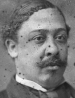

|

|

|
|
|
Louisiana's only black Reconstruction Congressman, Charles Edmund Nash was
born in Opelousas in 1844 and was educated in the common schools there. He was
working as a bricklayer in New Orleans when he enlisted in the Union army in
1863, rising to the rank of sergeant in the 82nd U.S. Colored Infantry. He lost
much of his right leg in the battle of Fort Blakely, Alabama. Nash was appointed
a night inspector of customs in 1869, and in 1874 he was elected to serve in the
44th Congress, 1875-77. He was defeated by a Democrat in his bid for reelection.
After Reconstruction, Nash served as postmaster at Washington, Louisiana, and
then worked as a cigar maker in New Orleans, where he died.
Source: Eric Foner, Freedom's Lawmakers: A Directory of Black
Officeholders during Reconstruction (New York: Oxford University Press,
1993), 158.
|